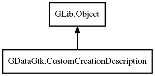

CustomCreationDescription
Object Hierarchy:

Description:
public class CustomCreationDescription : Object
Provides automatic widget creation for either registration or caching purposes. For caching, correct description can be resolved at any
time trough DefaultWidgets
Since:
0.1
Content:
Properties:
- public EditMode mode { set; get; }
Mode this registration is for
- public ParamSpec? pspec { set; get; }
TODO, Replace this with introspection transfer object
- public Type data_type { set; get; }
Value type this registration is handling
- public CreateCustomWidgetDelegate? specific_property_delegate { set; get; }
Registered delegate that creates new widget instance for class and
property
- public CreateCustomTypeWidgetDelegate? specific_type_delegate { set; get; }
Registered delegate method for creation of widget that only handles
value type
- public ConditionCheckDelegate? condition_check { set; get; }
Corner case value type handling that takes precedence over exact
match. Examples for this are enum and flags which are specified with different type each time, but all types share the ability to
resolve as flags/enum trough Type.is_flags
- public bool is_valid { get; }
Checks if description is valid or not. If it is not valid then it is
not available for widget creation
Creation methods:
Methods:
Inherited Members:
All known members inherited from class GLib.Object
- @new
- new_valist
- newv
- add_toggle_ref
- add_weak_pointer
- bind_property
- connect
- constructed
- disconnect
- dispose
- dup_data
- dup_qdata
- freeze_notify
- @get
- get_class
- get_data
- get_property
- get_qdata
- get_type
- notify_property
- @ref
- ref_sink
- replace_data
- replace_qdata
- remove_toggle_ref
- remove_weak_pointer
- @set
- set_data
- set_data_full
- set_property
- set_qdata
- set_qdata_full
- steal_data
- steal_qdata
- thaw_notify
- unref
- weak_ref
- weak_unref
- notify
- ref_count